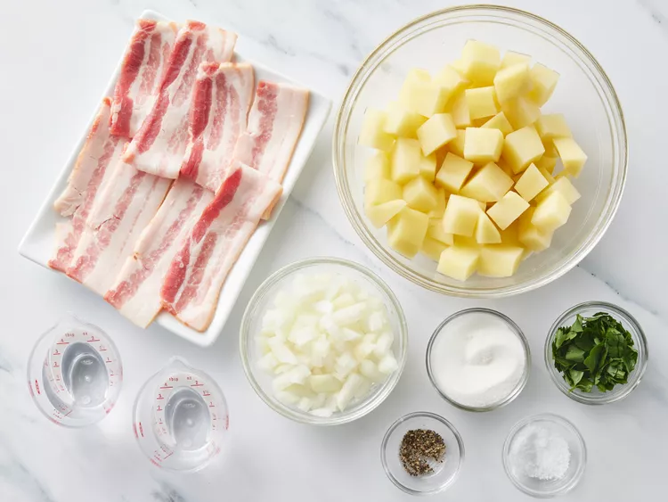
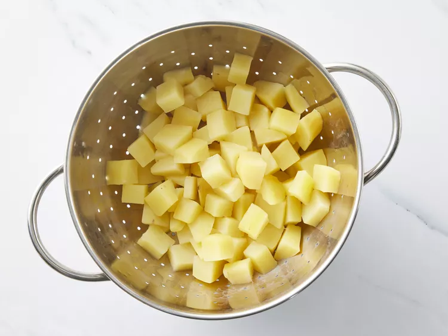
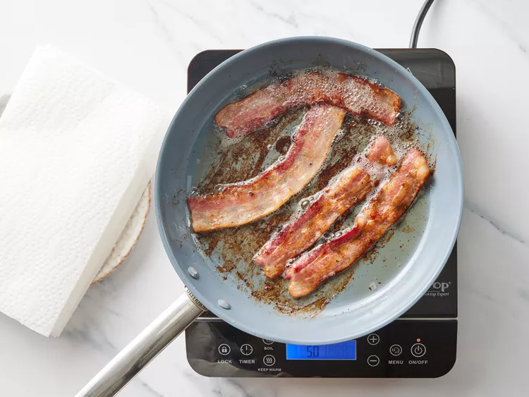
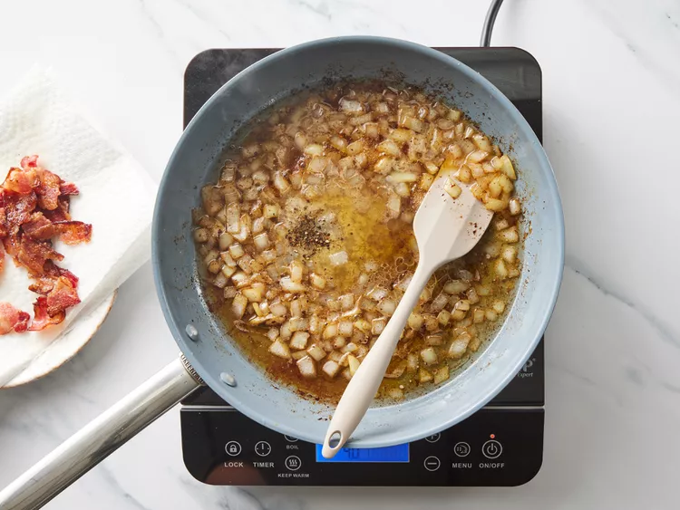
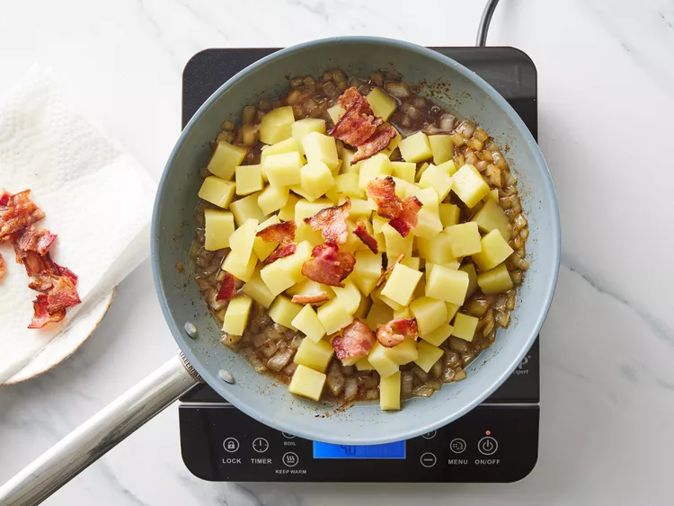
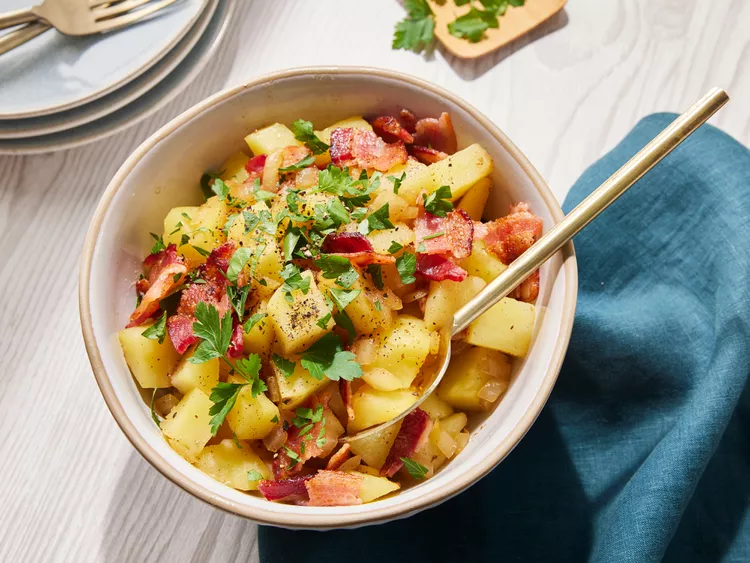

Unlike mayonnaise-based American potato salads, German potato salad is tossed in a vinegar-based dressing made with bacon drippings. It is usually served warm instead of cold, but some people prefer to serve it at room temperature.
The original recipe calls for 3 tablespoons sugar but some reviewers think that's too sweet. We recommend you start with 1 1/2 tablespoons and add more to taste.
Gather the ingredients.
Place potatoes in a large pot and add water to cover by at least 1 to 2 inches; bring to a boil. Cook until potatoes are easily pierced with a fork, about 10 minutes. Drain, and set aside to cool.
While the potatoes are cooking, place bacon in a large, deep skillet over medium-high heat. Fry until browned and crisp, 10 to 12 minutes, turning as needed. Transfer bacon to a paper towel-lined plate and crumble when cool enough to handle. Leave bacon grease in the skillet.
Cook onion in the bacon grease over medium heat until browned, 6 to 8 minutes. Add vinegar, sugar, water, salt, and pepper to the pan and bring to a boil.
Once boiling, add potatoes, and 1/2 of the crumbled bacon. Cook until heated through, 3 to 4 minutes.
Transfer warm potato salad to a serving dish and sprinkle remaining bacon over top. Garnish with parsley. Serve immediately.
